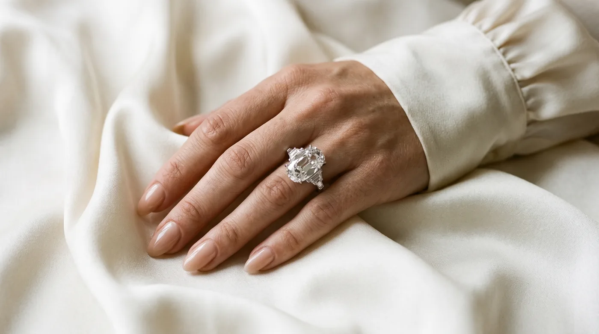

On 48th Street
22 West 48th Street, 14th Floor
New York, NY 10036
212-997-3205


J. Birnbach started as a diamond cutting company. Today it is one of New York’s premier diamond houses, and it still reads every stone the way a cutter does: through the loupe, facet by facet.

J. Birnbach diamonds have been worn on red carpets around the world, from the Emmys to the Oscars.


22 West 48th Street, 14th Floor
New York, NY 10036
212-997-3205
From wherever you are. Tell us which stone you would like to see, and we show it to you live, under the light.
Request a video viewing